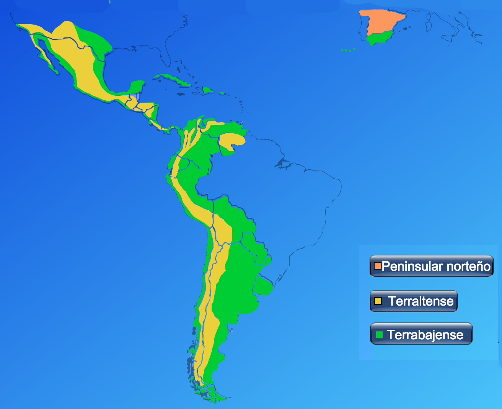
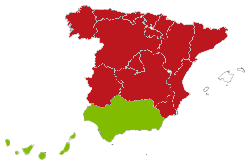
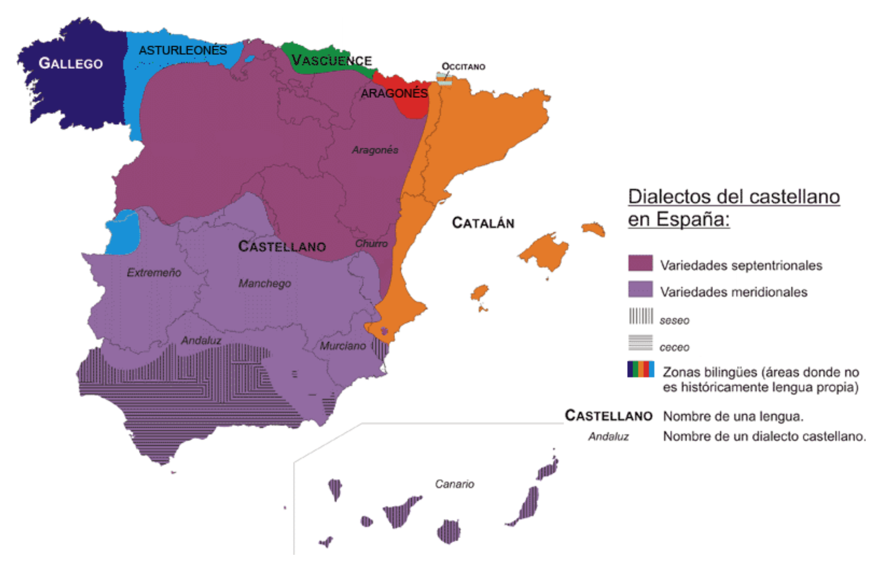
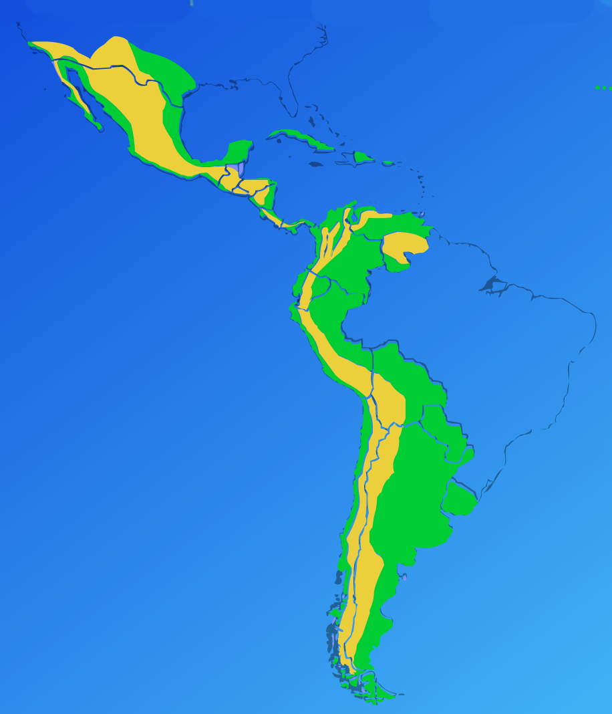
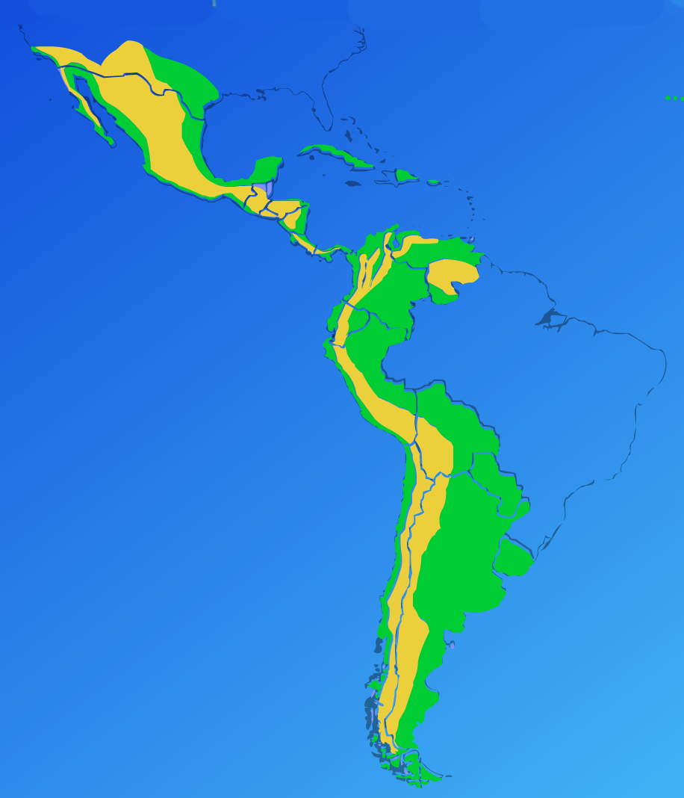
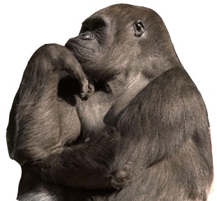

Fonética y español oral
El español peninsular y americano
Joseph V. Casillas
Instituto Franklin: otoño 2015
Repaso
Repaso
Los procesos fonológicos
- Cuéntale al vecino acerca de los tres procesos fonológicos que hemos visto en clase (i.e. cuáles son, cuándo ocurren, da ejemplos)
- Fricativización
- Sonorización
- Asimilación
Repaso
Las vibrantes
- ¿Cuántos fonemas hay? ¿Cuántos alófonos hay? ¿De qué depende?
- ¿En posición no intervocálica? ¿Cuántos fonemas hay? ¿Cuántos alófonos hay?
- ¿Cuáles son las reglas para su distribución?
Repaso - Las vibrantes
En posición intervocálica
- 2 fonemas, 1 alófono cada uno
- /r/ 'perro' /ˈpe.ro/
- /ɾ/ 'pero' /ˈpe.
ɾ o/
Cualquier otro entorno
- 1 fonema: /r/
- 2 alófonos: [r] o [
ɾ ] - Siempre es múltiple
- A principio de palabra: 'rico'
- A principio de sílaba después de consonante: 'alrededor', 'Enrique', 'Israel'
- Siempre el
simple en un ataque complejo y en posición de coda es opcional- 't
r ato', 'harto', 'calor'
- 't
Transcripciones
Decidid si se trata de un vibrante simple o múltiple
- 'para'
- 'parra'
- 'Rita'
- 'En roma'
- 'parto'
- 'comer'
- 'al rato'
- 'trato'
- [ˈpa.
ɾ a] - [ˈpa.ra]
- [ˈri.ta]
- [en.ˈro.ma]
- [ˈar.to] o [ˈa
ɾ .to] - [ko.mer] o [ko.me
ɾ ] - [al.ˈra.to]
- [t
ɾ a.to]
Pregunta
- ¿Por qué existen las diferencias dialectales?
- ¿A qué se deben?
- Identificad algunas de las variedades del español.
El español peninsular y americano
Tres zonas importantes
Tres zona importantes
- La península ibérica
- Las tierras altas
- Las tierras bajas

La península ibérica

Dos grandes zonas dialectales:
- el centro y norte de España: el castellano peninsular
- el sur de España: el andaluz (volveremos a hablar de esto)
Características del castellano
- La uvularización de /x/
- Distinción entre /θ/ y /s/
- Distinción entre /ʎ/ y /ʝ/
- la apicalización de /s/
- la velarización de /s/

La uvularización de /x/
- /x/ → [χ]
- 'jamón' /xa.ˈmon/ → [xa.ˈmon] vs. [
χ a.ˈmon] - 'Jose' /ˈxo.se/ → [ˈxo.se] vs. [ˈ
χ o.se]
La distinción entre /θ/ y /s/
- Distinción: /θ/ ≠ /s/
- /s/ → 's'
- /θ/ → 'c' (delante de 'e'/ 'i'), 'z'
| Fonema | Grafema | Palabra | Transcripción fonémica | Transcripción fonética |
|---|---|---|---|---|
| /s/ | 's' | 'sana' | /ˈsa.na/ | [ˈsa.na] |
| /θ/ | 'c' | 'cera' | /ˈθe.ɾa/ | [ˈθe.ɾa] |
| 'cine' | /ˈθi.ne/ | [ˈθi.ne] | ||
| /θ/ | 'z' | 'zapato' | /θa.ˈpa.to/ | [θa.ˈpa.to] |
Distinción entre /ʎ/ y /ʝ/
- Distinción: /ʎ/ ≠ /ʝ/
- /ʎ/ → 'll'
- /ʝ/ → 'y'
| Fonema | Grafema | Palabra | Transcripción fonémica | Transcripción fonética |
|---|---|---|---|---|
| /ʎ/ | 'll' | 'se calló' | /se.ka.ˈʎo/ | [se.ka.ˈʎo] |
| /ʝ/ | 'y' | 'se cayó' | /se.ka.ˈʝo/ | [se.ka.ˈʝo] |
- Esta distinción se mantiene en muy pocos sitios
La apicalización de /s/
- /s/ → Alveolar, predorsal
- /s̺/ → Alveolar,
apical
Ejemplos
- 'pasaje'
[pa.ˈsa.xe] vs. [pa.ˈs̺a.xe] - 'solo'
[ˈso.lo] vs. [ˈs̺o.lo]
La velarización de /s/
- /s/ → [χ] en posición de coda
- 'es que' [eχ.ke]
Repasito
- ¿Cuáles son las tres zonas importantes en la dialectología hispánica?
- ¿Qué significa hacer distinción? Dad ejemplos.
- Nombrad 2 diferencias dialectales con respecto a la /s/ castellana.
Las tierras altas
 

La zona alteña comprende todas las tierras 'altas' del Nuevo Mundo, es decir, las que se encuentran a cierta altura sobre el nivel del mar:
- casi todo México,
- Guatemala,
- la altiplanicie de Colombia,
- los altos occidentales de Venezuela,
- la gran mayoría del territorio de los países andinos (el Ecuador, el Perú, Bolivia y el norte montañoso de la Argentina).
Las tierras altas
Información básica
- El alteño representa el dialecto que trajeron los primeros colonizadores españoles
- La mayoría de ellos eran de Andalucía
- Comienza con el segundo viaje de Cristóbal Colón en 1493-1496.
Características generales
- Consonantismo fuerte
- típicamente las consonantes en posición de coda no se pierden ni se alteran.
- Ausencia de distinción entre /ʝ/ y /ʎ/
- El 'seseo'
El seseo
Seseo: neutralización de la distinción entre /θ/ y /s/:
- /s/ → 's', 'c' (delante de 'e'/ 'i'), 'z'
| Fonema | Grafema | Palabra | Transcripción fonémica | Transcripción fonética |
|---|---|---|---|---|
| /s/ | 's' | 'sana' | /ˈsa.na/ | [ˈsa.na] |
| 'c' | 'cera' | /ˈse.ɾa/ | [ˈse.ɾa] | |
| 'cine' | /ˈsi.ne/ | [ˈsi.ne] | ||
| 'z' | 'zapato' | /sa.ˈpa.to/ | [sa.ˈpa.to] |
Las tierras bajas
Información básica
- El término 'tierras bajas' se refiere al nivel del mar
- Es el dialecto predominante en las zonas 'bajas' con respecto al nivel del mar en las Américas (y el sur de España)
- Representa el andaluz que fue llevado por los colonizadores que llegaron más tarde a las Américas.
- Es un andaluz más evolucionado
Las tierras bajas
Características generales
- el seseo
- el debilitamiento/pérdida de fricativas
- la glotización de /x/
- la aspiración/pérdida/geminación de /s/
- la velarización /n/
- la lateralizacion de /r/
- la fricativización velar de /r/
- el rehilamiento de /ʝ/
El debilitamiento/pérdida de fricativas
| 'escuchado' | [es.ku.ˈʧa.ðo] → [es.ku.ˈʧa.o] |
| 'es verdad' | [ez.ßer.ˈðað] → [ez.ßer.ˈða] |
| 'todo' | [to.ðo] → [to] |
La /s/
- La aspiración: proceso por el cual la /s/ se realiza como [h], típicamente en posición de coda
- La elisión: proceso por el cual un sonido (la /s/) se elide
- La geminación: proceso por el cual un sonido (/s/) se duplica entre sílabas
Ejemplos
- Aspiración: [ˈpu̯es.to] → [ˈpu̯eh.to]
- Elisión: [ˈpu̯eh.to] → [ˈpu̯e.to]
- Geminación: [ˈpu̯e.to] → [ˈpu̯et.to]
La velarización de /n/
- /n/ → [ŋ]
- Ya sabemos que [ŋ] se da cuando /n/ se encuentra antes de una consonante velar.
- ej. tengo [ˈteŋ.go]
- En algunas variedades /n/ se realiza como [ŋ] en posición de coda (final de sílaba)
| Palabra | Transcpción | Resultado |
|---|---|---|
| en Bogotá | [em.bo.ɣo.ˈta] | [eŋ.bo.ɣo.ˈta] |
| en Toledo | [en̪.to.ˈle.ðo] | [eŋ.to.ˈle.ðo] |
La lateralización de /r/
- También conocida como “lambdaización”
- /r/ → [l]
- Ocurre en posicion de coda (final de sílaba)
Ejemplos
- Hace falta, mi amor
- [ˈa.se.ˈfal.ta//mi̯a.moɾ] → [ˈa.se.ˈfal.ta//mi̯a.ˈmol]
La fricativización velar de /r/
- /r/ → [x]
- Es uno de los ragos más destacados del español puertorriqueño ([ˈpu̯el̪.to.χi.ˈke.ɲo])
El rehilamiento
- [ʝ] fricativo palatal sonoro: la lluvia
- [dʒ] africado alveopalatal sonoro : las llaves
- [ʒ] fricativo alveopalatal sonoro : los caballos
- [ʃ] fricativo alveopalatal sordo: el llanto
El andaluz
El andaluz
- el debilitamiento y pérdida de fricativas
- el seseo
- el ceceo
- la simplificación de grupos consonánticos
- el rotacismo de /l/
- la desafricación de /ʧ/
El ceceo
- Ceceo: solamente /θ/
- /θ/ → 's', 'c' (delante de 'e'/'i'), 'z'
- Sólo ocurre en posición de ataque
| Fonema | Grafema | Palabra | Transcripción fonémica | Transcripción fonética |
|---|---|---|---|---|
| /θ/ | 's' | 'sana' | /ˈθa.na/ | [ˈθa.na] |
| 'c' | 'cera' | /ˈθe.ɾa/ | [ˈθe.ɾa] | |
| 'cine' | /ˈθi.ne/ | [ˈθi.ne] | ||
| 'z' | 'zapato' | /θa.ˈpa.to/ | [θa.ˈpa.to] |
Seseo, ceceo y distinción
Para hablar del tema...
| /θ/ y /s/ | sólo /θ/ | sólo /s/ | |
|---|---|---|---|
| sustantivo | distinción | ceceo | seseo |
| adjetivo | distinguidor | ceceante | seseante |
| verbo | hacer distinción | cecear | sesear |
Seseo, ceceo y distinción
Ejemplos
| DISTINCIÓN | CECEO | SESEO | |
|---|---|---|---|
| celoso | [θe.ˈlo.so] | [θe.ˈlo.θo] | [se.ˈlo.so] |
| sollozo | [so.ˈʝo.θo] | [θo.ˈʝo.θo] | [so.ˈʝo.so] |
| conocidos | [ko.no.ˈθi.ðos] | [ko.no.ˈθi.ðoθ] | [ko.no.ˈsi.ðos] |
| cazado | [ka.ˈθa.ðo] | [ka.ˈθa.ðo] | [ka.ˈsa.ðo] |
| casado | [ka.ˈsa.ðo] | [ka.ˈθa.ðo] | [ka.ˈsa.ðo] |
La simplificación de grupos consonánticos
- El grupo consonántico se reduce para que la sílaba pueda aproximarse a la estructura silábica preferida.
- También ocurre en una secuencia de dos o más consonantes que se encuentran en diferentes sílabas
| Palabra | Transcripción | Resultado |
|---|---|---|
| construcción | [kons.tɾuk.ˈsi̯on] | [kos.tɾuk.ˈsi̯on] |
| explicar | [eks.pli.ˈkaɾ] | [es.pli.ˈkaɾ] |
| gimnasio | [xim.ˈna.si̯o] | [xi.ˈna.si̯o] |
El rotacismo de /l/
- /l/ → [r]
- Ocurre en posicion de coda (final de sílaba)
Ejemplos
- Hace falta, mi amor
- [ˈa.se.ˈfal.ta//mi̯a.ˈmor] → [ˈa.se.ˈfar.ta//mi̯a.ˈmor]
La desafricación de /ʧ/
- [ʧ]: africado, alveopalatal, sordo → [ʃ]
- [ʧ] sin la oclusión [t] = [ʃ]
- 'muchacho' → /mu.ˈʧa.ʧo/ → [mu.ˈʃa.ʃo]
- 'muchacho' → /mu.ˈʧa.ʧo/ → [mu.ˈʃa.ʃo]
La variación dialectal (resumen)
La variación dialectal
3 zonas
- La península
- La tierra alta
- La tierra baja
Contexto fónico
- En posición de coda (débil)
- cv.cv
- cvc.cv
- En posición de ataque (no débil)
Variación en posición de coda (débil)
- la simplificación de grupos consonánticos
- la /s/
- la aspiración
- elisión
- geminación
- la velarización de /n/
- la lateralización de /r/
- el rotacismo de /l/
Variación en posición de ataque (no débil)
- Debilitamiento y pérdida de fricativas
- Rehilamiento de /ʝ/
- Uvularización de /x/
- Glotización de /x/
- Fricatización velar de /r/
- Desafricación de /ʧ/
Preguntas

- ¿Por qué existen las diferencias dialectales? ¿A qué se deben? Identifique algunas de las variedades del español.
- ¿Por qué se estigmatizan algunos dialectos? ¿Crees que la estigmatización se da más con los geodialectos, sociolectos, etnolectos o con los idiolectos? ¿Puedes dar algunos ejemplos?
- ¿Qué dialectos gozan de mayor prestigio? ¿Qué características hacen que un dialecto
¡Gracias!

Práctica
Transcribid
- Un cubano canoso cuenta la caña con cuidado
- Concepción Núñez de Los Ángeles tiene un pato nombrado Chencho Núñez.
- Con que te vas inmediatamente a la cabaña para no tener que nadar.
- El niño Angélico está enfermo.
- Era un año antes de la independencia del país.
- Un gringo me mandó un folleto.
- Muchos de los meʝores estudiantes se esforzaron para poder hacerlo cuanto antes.
Transcribid
- Uncubanocanosocuentalacañaconcuidado
- ConcepciónNúñezdeLosÁngelestieneunpatonombradoChenchoNúñez.
- Conquetevasinmediatamentealacabañaparanotenerquenadar.
- ElniñoAngélicoestáenfermo.
- Eraunañoantesdelaindependenciadelpaís.
- Ungringomemandóunfolleto.
- Muchosdelosmeʝoresestudiantesseesforzaronparapoderhacerlocuantoantes
Transcribid
- /ˈuN.ku.ˈba.no.ka.ˈno.so.ˈku̯eN.ta.la.ˈka.ɲa.koN.Ku̯i.ˈda.do/
- /koN.sep.ˈsi̯o.ˈnu.ɲes.de.lo.ˈsaN.xe.les.ˈti̯e.ˈneu̯N.ˈpa.to.noN.ˈbɾa.do.ˈʧeN.ʧo.ˈnu.ɲes/
- /koN.ke.te.ˈba.siN.me.di̯a.ta.ˈmeN.te.a.la.ka.ˈba.ɲa.pa.ɾa.no.te.ˈneɾ.ke.na.ˈdaɾ/
- /el.ˈni.ɲo.aN.ˈxe.li.ko.es.ˈta.eN.ˈfeɾ.mo/
- /ˈe.ɾau̯.ˈna.ɲo.ˈaN.tes.de.lai̯N.de.peN.ˈdeN.si̯a.del.pa.ˈis/
- /uN.ˈgɾiN.go.me.maN.ˈdou̯N.fo.ˈʝe.to/
- /ˈmu.ʧos.de.los.me.ˈxo.ɾe.ses.tu.ˈdi̯aN.te.se:s.foɾ.ˈθa.ɾoN.pa.ɾa.po.ˈde.ɾa.ˈθeɾ.lo.ku̯an.to.an.tes/
Transcribid
- /uN.ku.ˈba.no.ka.ˈno.so.ˈku̯eN.ta.la.ˈka.ɲa.koN.ku̯i.ˈda.do/
[uŋ.ku.ˈβa.no.ka.ˈno.so.ˈku̯en̪.ta.la.ˈka.ɲa.koŋ.ku̯i.ˈða.ðo] - /koN.sep.ˈsi̯o.ˈnu.ɲes.de.lo.ˈsaN.xe.les.ˈti̯e.ˈneu̯N.ˈpa.to.noN.ˈbɾa.do.ˈʧeN.ʧo.ˈnu.ɲes/
[kon.sep.ˈsi̯o.ˈnu.ɲez.ðe.lo.ˈsaŋ.xe.les.ˈti̯e.ˈneu̯m.ˈpa.to.nom.ˈbɾa.ðo.ˈʧeɳ.ʧo.ˈnu.ɲes] - /koN.ke.te.ˈba.siN.me.di̯a.ta.ˈmeN.te.a.la.ka.ˈba.ɲa.pa.ɾa.no.te.ˈneɾ.ke.na.ˈdaɾ/
[koŋ.ke.te.ˈβa.sim.me.ði̯a.ta.ˈmen̪.te.a.la.ka.ˈβa.ɲa.pa.ɾa.no.te.ˈneɾ.ke.na.ˈðaɾ] - /el.ˈni.ɲo.aN.ˈxe.li.ko.es.ˈta.eN.ˈfeɾ.mo/
[el.ˈni.ɲo.aŋ.ˈxe.li.ko.es.ˈta.eɱ.ˈfeɾ.mo] - /ˈe.ɾau̯.ˈna.ɲo.ˈaN.tes.de.lai̯N.de.peN.ˈdeN.si̯a.del.pa.ˈis/
[ˈe.ɾaú̯.ˈna.ɲo.ˈan̪.tez.ðe.lai̯n̪.de.pen̪.ˈden.si̯a.ð el.pa.ˈis] - /uN.ˈgɾiN.go.me.maN.ˈdou̯N.fo.ˈje.to/
[uŋ.ˈgɾiŋ.go.me.man̪.ˈdou̯ɱ.fo.ˈʝe.to] - /ˈmu.ʧos.de.los.me.ˈxo.ɾe.ses.tu.ˈdi̯aN.te.se:s.foɾ.ˈθa.ɾoN.pa.ɾa.po.ˈde.ɾa.ˈθeɾ.lo.ku̯an.to.an.tes/
[ˈmu.ʧoz.ðe.loz.me.ˈxo.ɾe.ses.tu.ˈði̯an̪.te.se:s.foɾ.ˈθa.ɾom.pa.ɾa.po.ˈðe.ɾa.ˈθeɾ.lo.ku̯an̪.to.an̪.tes]